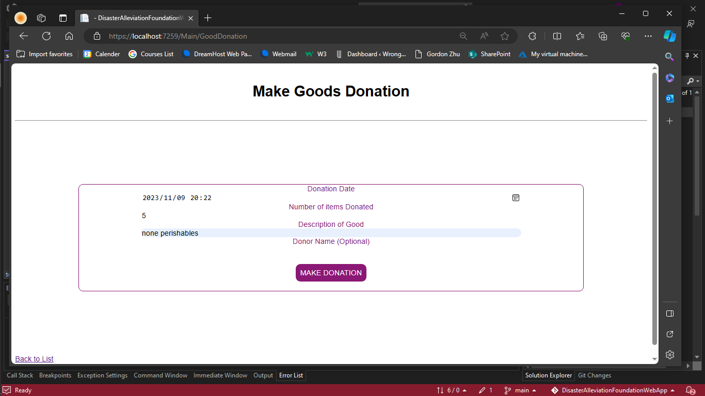

↑
Gallery


↓
This is a 3rd-year academic project designed to create a system for managing donations for a fictional non-profit organization called the Disaster Alleviation Foundation. The project demonstrates the ability to design and develop a platform that facilitates donation tracking, management, and reporting, with a focus on addressing disaster-related needs.
View the full repo here